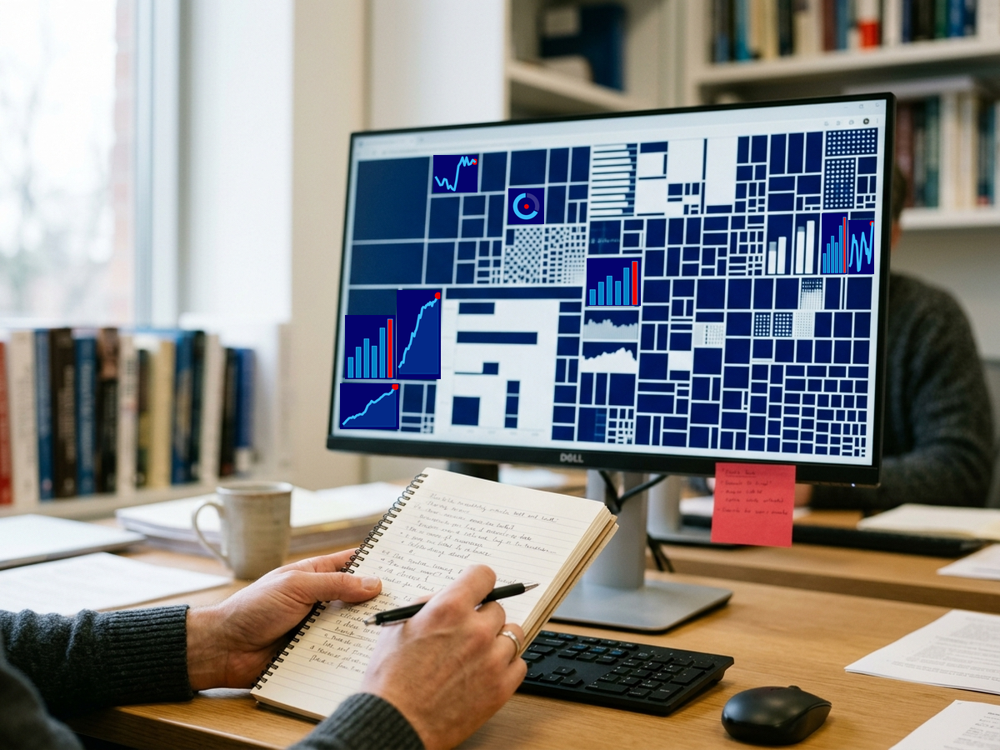
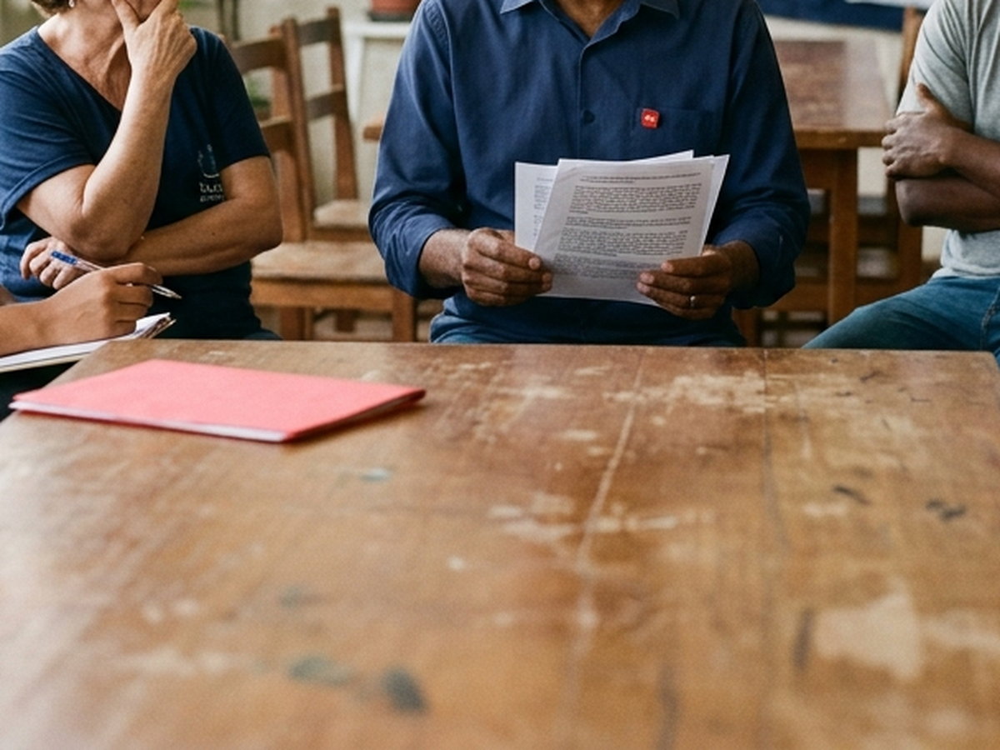

Dados, indicadores e análise em tempo real, organizados por dimensão socioeconômica, para apoiar a elaboração dos boletins de conjuntura e dar subsídio imediato a todo o DIEESE.
Um indicador em destaque e as maiores variações entre os últimos pontos publicados em todas as dimensões, calculadas em cima dos dados reais já coletados, não uma lista de ativos financeiros.
Carregando indicadores…
O DIEESE (Departamento Intersindical de Estatística e Estudos Socioeconômicos) é uma entidade criada e mantida pelo movimento sindical brasileiro desde 1955, com a finalidade de produzir pesquisa que sustente as demandas dos trabalhadores. Cerca de 700 sindicatos, federações, confederações e centrais sindicais são filiados à instituição e integram sua direção.
A atuação combina pesquisa, assessoria técnica e formação, voltadas a dirigentes e assessores sindicais e aos próprios trabalhadores. Reconhecido como entidade de utilidade pública, o DIEESE mantém 17 escritórios regionais, cerca de 50 subseções instaladas em entidades sindicais e dois observatórios do trabalho. Entre as pesquisas de periodicidade mensal já conduzidas estão o acompanhamento de emprego e desemprego, cesta básica, salário mínimo e custo de vida na cidade de São Paulo.
O DIEESE 360 organiza o acesso a parte desse trabalho. Não substitui a pesquisa do DIEESE nem a interpretação de seus técnicos.
Uma plataforma permanente de coleta, tratamento e visualização de dados econômicos e socioeconômicos, construída para dois usos complementares: dar aos técnicos do DIEESE a base de dados pronta para elaborar os boletins de conjuntura, e oferecer a todo o DIEESE um painel de acompanhamento em tempo real dos principais indicadores do país.
Os dados vêm de fontes oficiais (IBGE, Banco Central, Tesouro Nacional, MDIC, FMI, BNDES e publicações do próprio DIEESE), coletados automaticamente por motores de ingestão próprios, com rastreabilidade completa de fonte e metodologia em cada indicador (clique num cartão para ver os detalhes e o gráfico).

O Boletim de Conjuntura é a publicação periódica do DIEESE dedicada à leitura do momento econômico brasileiro, editada desde novembro de 2014. A edição mais recente identificada nesta pesquisa é a de número 54, de maio de 2026, intitulada "O Brasil no contexto da instabilidade mundial: uma leitura da conjuntura recente". Cada edição recebe um título próprio, definido pelo tema que organiza a leitura daquele período.
A periodicidade não segue um calendário mensal fixo. O intervalo entre edições varia ao longo da série: dez edições foram publicadas entre outubro de 2024 e maio de 2026, por exemplo. O conteúdo completo de cada boletim é de acesso restrito aos associados do DIEESE; o DIEESE 360 não reproduz esse texto, e organiza, de forma complementar, os indicadores quantitativos que também sustentam esse tipo de análise.
A periodicidade acima é estimada a partir da numeração e das datas das edições públicas. Não é uma frequência fixa declarada pelo DIEESE.

Cada dimensão reúne os indicadores de um mesmo domínio da conjuntura. A navegação completa, com todos os indicadores de cada dimensão, fica disponível depois do login.
O acesso é por convite da administração da plataforma. Não há cadastro aberto. Quem já tem conta entra pelo botão "Entrar", no topo da página.
Sim. Cada indicador é coletado por um motor próprio, agendado conforme a periodicidade da fonte oficial (diária, semanal ou mensal). Não há atualização manual nem digitação de valores.
De fontes oficiais e primárias (IBGE, Banco Central, Tesouro Nacional, MDIC, FMI, Ministério do Trabalho, entre outras). Cada indicador traz a fonte exata, a metodologia de cálculo e a periodicidade na própria página. Não há número sem essa rastreabilidade.
Não. O painel organiza indicadores quantitativos de forma contínua; a leitura, a seleção de tema e a interpretação de cada edição do Boletim de Conjuntura continuam sendo trabalho dos técnicos do DIEESE.
Sim. Cada indicador tem exportação em Excel, com a série completa ou só o período filtrado, incluindo metodologia e fonte na própria planilha.
Pelos contatos da seção abaixo. Qualquer fonte oficial que ajude a leitura da conjuntura pode ser avaliada para entrar na plataforma.